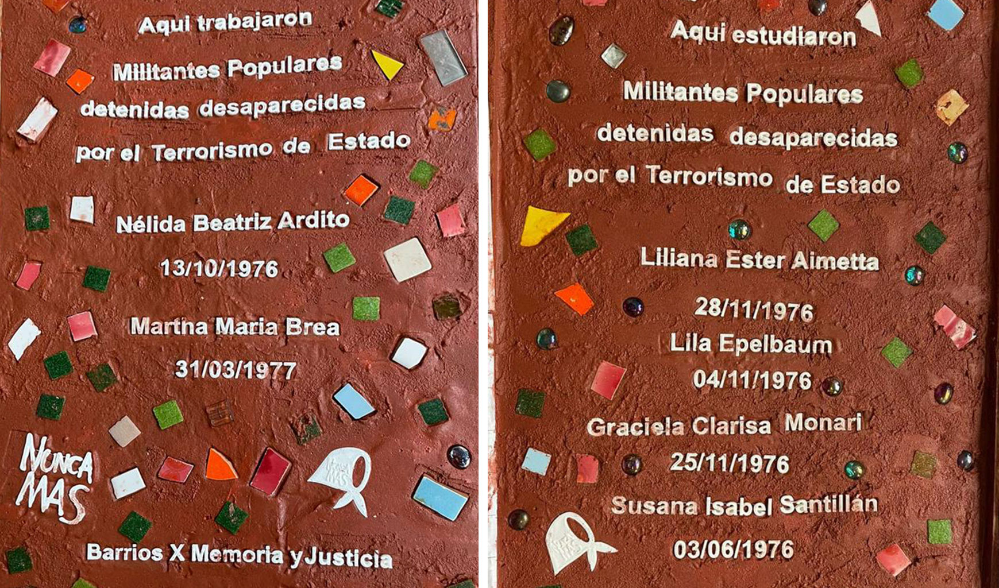
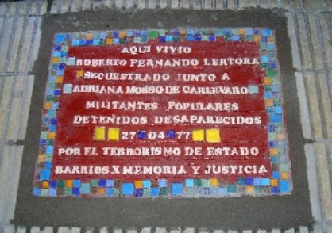

Baldosa 3: Nélida Ardito y Martha Brea
Tipo: Roja con mosaicos distribuidos
Características:
- Color base rojo terracota
- Múltiples mosaicos coloridos
- Logo "NUNCA MAS"
- Lazo blanco

Contenido AR: Información sobre Nélida Beatriz Ardito y Martha Maria Brea, militantes populares detenidas desaparecidas.
Baldosa 4: Roberto Fernando Tortora
Tipo: Roja con borde de mosaicos
Características:
- Color base rojo oscuro
- Borde perimetral tipo mosaico
- Fecha en amarillo "27-04-77"
- Diseño simétrico

Contenido AR: Historia de Roberto Fernando Tortora y Adriana Namio de Carlipparro, secuestrados el 27/04/77.